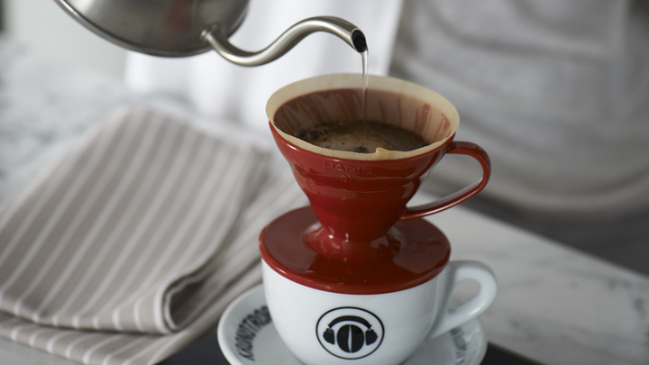
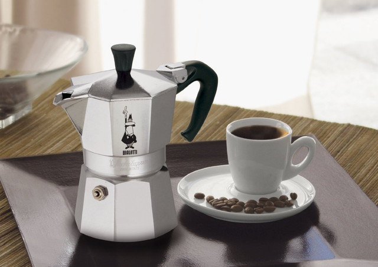
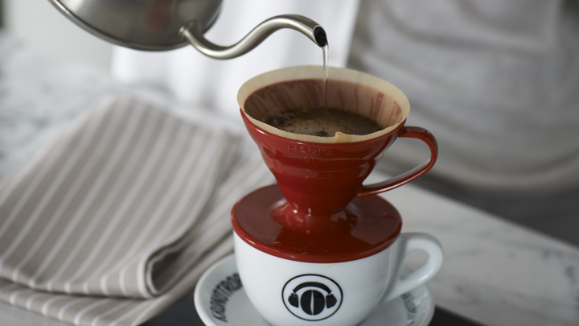
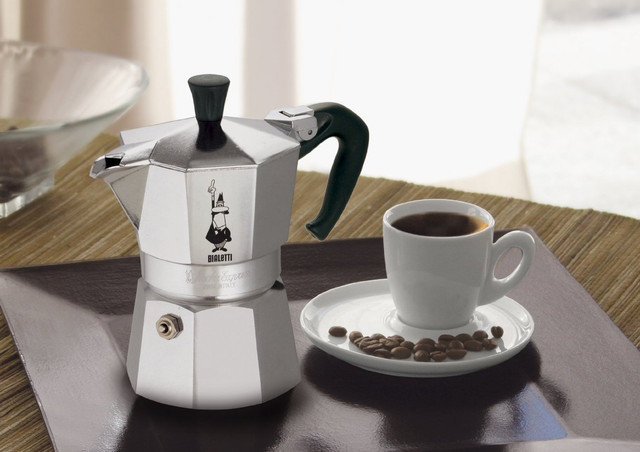

welcome

Хтось не може жити без чашки чорної кави зранку, дехто полюбляє випити еспресо після обіду, хтось віддає перевагу філіжанці капучино або фрапе під час робочої перерви. Але одне точно - так багато кави у світі ще не пили.У 1991 році споживання кави у світі становило 90 мільйонів 60-ти кілограмових мішків, за даними Міжнародної організації з кави (ICO). Цього року прогнозується, що споживання сягне понад 160 мільйонів мішків.

 


